地政学
カンヌは首都ではないが、映画祭と国際会議を通じて国家、企業、メディア、観光外交が交わる。ニース空港、モナコ、イタリア国境にも近く、地中海沿岸の小都市が世界の注目を受け止める場でもある。港町だ。外交も映す。
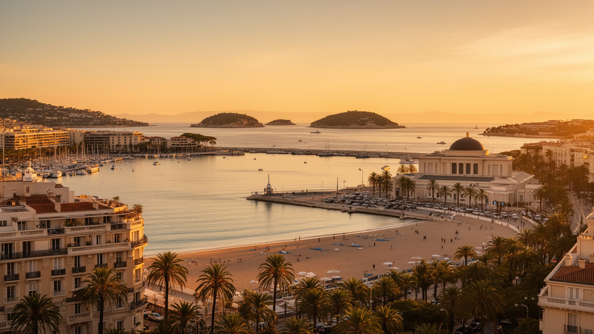
🇫🇷 フランス / コート・ダジュール / World City Atlas
映画祭の赤い階段で知られる一方、旧港、クロワゼット、ラ・ボカの工業、会議産業、島の修道院、季節労働、住宅圧力が近い距離に重なる地中海の都市です。
都市の骨格
カンヌは国際映画祭の象徴性が強いが、都市を支えるのは観光、会議、港湾、商業、宇宙関連工業、季節労働、住宅地、島の自然と信仰です。華やかな海岸線の背後に、働く都市の層があります。
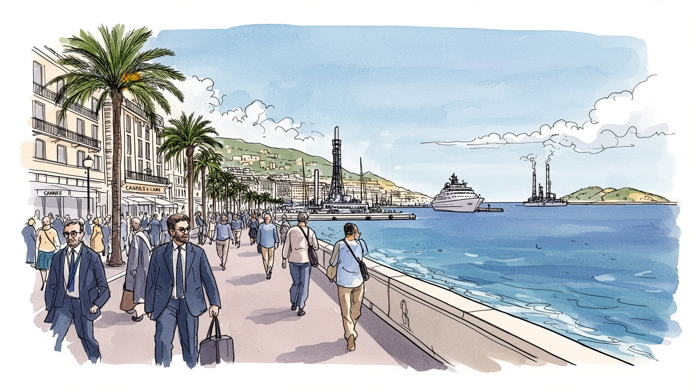
カンヌは首都ではないが、映画祭と国際会議を通じて国家、企業、メディア、観光外交が交わる。ニース空港、モナコ、イタリア国境にも近く、地中海沿岸の小都市が世界の注目を受け止める場でもある。港町だ。外交も映す。
映画祭、ホテル、飲食、警備、清掃、会議運営、港湾、商業、ラ・ボカの宇宙関連工業が雇用を作る。華やかな消費の裏側では、季節労働者、職人、技術者、通勤者が都市を毎日動かしている。生活の基盤だ。現場も厚い。
映画文化、南仏の食卓、カトリック教会、レランス諸島の修道院、移民の祈りが重なる。海辺の社交だけでなく、祭礼、学校、地域市場、教会の鐘が生活文化を静かに支えている港町である。島も近い。祈りも続く街。
旅行者はクロワゼット、旧港、パレ、砂浜、島々へ向かうが、住民は家賃、短期貸し、交通渋滞、夏の混雑、老後の医療、若者の仕事と向き合う。観光都市の快適さは、日常との折り合いで決まる。課題も濃い。生活も残る。
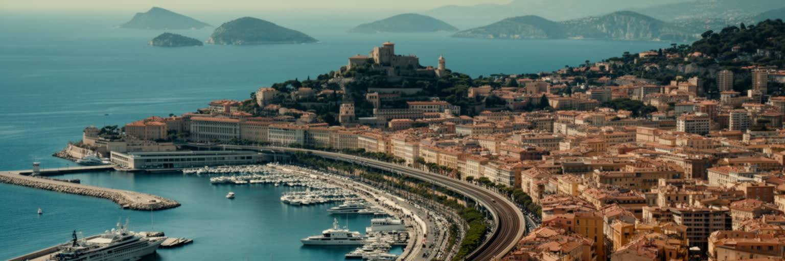
カンヌの都市形態は、地中海に開いた湾、砂浜の弧、旧港、ル・シュケの丘、鉄道、背後の低い山並みによって作られている。クロワゼットは海に沿う舞台であり、ホテル、劇場、会議場、ブティック、砂浜、歩道が一列に並ぶ。一方で、数本内側へ入れば住宅、学校、商店、診療所、日常のバス路線があり、観光の正面と生活の裏側は驚くほど近い。旧市街の丘は港町の記憶を残し、ラ・ボカ方面は工業、集合住宅、交通施設が都市の実務を担う。湾の外にはレランス諸島が浮かび、修道院、森、海水浴、船の時間が中心部の密度を和らげる。カンヌを読むには、赤い階段や高級ホテルだけでなく、海岸線がどの土地を高くし、鉄道がどこを分け、丘と港がどの生活圏を作ったかを見る必要がある。小さな市域に世界的なイベント、地元商業、季節の人口増、工業、住宅需要が詰め込まれるため、都市は常に舞台と生活の幅を調整している。海が近いことは魅力であると同時に、土地の希少さ、浸水、高潮、観光圧力を強める条件でもある。湾は風景ではなく、都市の価格、移動、労働、記憶を決める基礎である。とくに鉄道より海側の狭い帯は、歩行者、配送、警備、ホテル客、住民の移動が重なり、空間の使い方がすぐ都市全体の印象を変える。丘上から湾を見下ろすと、観光の舞台、生活の街路、工業の西側が一つの地形に収まっていることがよく分かる。
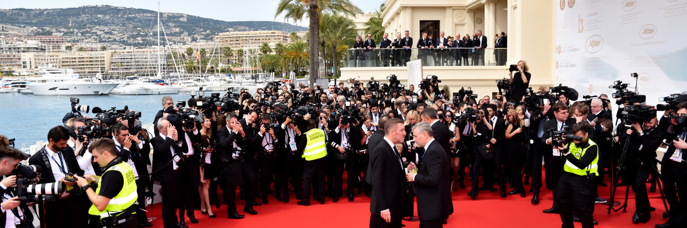
カンヌ国際映画祭は、映画の芸術性を競う場であると同時に、都市外交、文化政策、メディア産業、観光経済が交差する巨大な装置である。期間中、パレ・デ・フェスティバル周辺には映画監督、俳優、配給会社、批評家、記者、スポンサー、警備員、清掃員、運転手、観客が集まり、人口七万人規模の都市が世界の視線を受け止める。映画祭の権威はフランス文化外交の資産であり、各国の映画政策や表現の自由をめぐる緊張もここに現れる。華やかなレッドカーペットは都市の顔だが、その運営にはホテルの部屋割り、交通規制、通訳、映写、通信、港の利用、廃棄物処理まで含まれる。カンヌを映画祭の都市として読むには、作品の受賞歴だけでなく、誰が会場に入れるのか、どの映画が市場で売られるのか、どの労働が見えないまま都市を支えるのかを見る必要がある。映画祭はカンヌに世界性を与えるが、同時に短期間の価格高騰、住民の移動制限、公共空間の占有も生む。文化の祝祭は、都市の公共性と商業化の境界を毎年試している。海辺の小都市が世界文化の議論を抱え込むからこそ、カンヌは単なるリゾートではなく、映像、権力、消費、労働が同じ歩道で交わる都市になる。会場の外で待つ人、招待状を持つ人、働くためだけに入る人の差は、文化イベントが作る階層も映し出す。その視線が街路の緊張を生む。
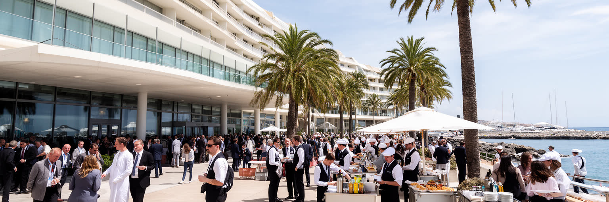
カンヌの経済は映画祭だけで一年を動かしているわけではない。パレ・デ・フェスティバルでは不動産、テレビ、広告、音楽、旅行、企業イベントなどの国際見本市と会議が開かれ、ホテル、飲食、通訳、展示施工、警備、清掃、タクシー、港湾サービスへ需要を送る。観光都市にとって会議産業は、夏の海水浴客だけに頼らず、春秋にも客室とレストランを動かす重要な仕組みである。だがこの経済は安定した会社員だけで成り立たない。短期契約、季節雇用、夜間勤務、複数の小さな仕事を組み合わせる人が多く、華やかな会場の裏側には設営、搬入、案内、清掃、料理、警備の緊張がある。国際イベントは高い支出を呼び込む一方、宿泊価格を押し上げ、住民の移動や中心部の利用に制約をかける。カンヌを会議都市として読むには、海辺の消費額だけでなく、イベントが終わった翌朝の撤去作業、低賃金のサービス労働、近隣自治体からの通勤、若者が技能を積める職場かどうかを見る必要がある。会議産業は都市の国際性を維持する力だが、住民の生活費と働き手の待遇を置き去りにすれば、都市の足元は弱くなる。舞台を作る仕事が尊重されて初めて、カンヌの華やかさは持続する。会議の誘致、港の利用、ホテル改修、公共交通の改善は、観光戦略であると同時に地域雇用政策でもある。収益を街の基盤へ戻す設計が問われる。
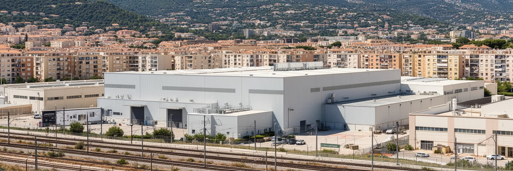
カンヌの意外な顔が、ラ・ボカ周辺に残る工業と宇宙関連産業である。海辺のリゾートとしてのイメージが強い都市だが、衛星や通信機器に関わる高度な製造、設計、試験の仕事があり、技術者、技能職、管理部門、下請け企業、物流が都市の雇用を支えている。観光の季節性に対し、工業は比較的長い時間軸で技能と研究開発を積み上げる。ラ・ボカには集合住宅、駅、道路、学校、商店もあり、クロワゼットの高級ホテルとは違う生活感がある。ここを見ると、カンヌが単なる富裕層の余暇空間ではなく、航空宇宙、電子、メンテナンス、建設、日常商業を含む働く都市であることが分かる。産業用地は海岸都市では常に不動産開発の圧力を受けるが、技術職の雇用を守ることは都市の経済を観光一色にしないために重要である。カンヌを読むなら、映画祭の会場から西へ移動し、工場、鉄道、倉庫、団地、職業訓練の風景を見なければならない。華やかなブランド力と地道な技術力が同じ市域にあることが、カンヌの厚みである。宇宙産業は都市の名声を別の方向へ広げ、若い世代に観光以外の職業選択を残す。海辺の地価が上がるほど、こうした職場を都市の中に保つ判断が問われる。研究開発と製造の現場が残れば、都市は景気や季節に左右されにくい技能の蓄積を持てる。工業の存在は、観光都市の外見だけでは測れない専門性と地域の誇りを示している。
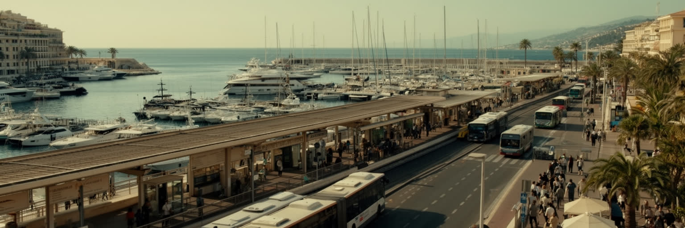
カンヌの交通は、港、鉄道、道路、バス、近隣空港の組み合わせで成り立つ。旧港にはヨット、観光船、レランス諸島への航路、イベント時の海上利用が集まり、鉄道駅はニース、アンティーブ、グラース、マルセイユ、イタリア方面を結ぶ。国際的な来訪者の多くはニース・コートダジュール空港を使い、空港からの移動、タクシー、送迎車、バスが海岸道路へ集中する。市域は大きくないが、イベント期には道路規制、駐車、配送、歩行者、警備が複雑に絡み、住民の通勤や買物にも影響する。港は富裕層のヨットだけの場所ではなく、船員、整備、燃料、清掃、観光案内、島の物流を支える働く水辺でもある。鉄道は観光客だけでなく、ホテルや店舗で働く人、学生、高齢者の移動を支える。カンヌを交通から読むには、豪華な車列やマリーナの景色だけでなく、朝の駅、混雑するバス停、海辺を横切る配送車、島へ渡る定期船を見る必要がある。都市の魅力はアクセスの良さに支えられるが、その便利さは道路や歩道を誰がどれだけ使えるかという公平性の問題でもある。小さな湾岸都市では、一本の道路の混雑が生活時間を大きく変える。イベントを成功させる力と、住民の毎日を乱しすぎない調整力は同じくらい重要である。自転車、徒歩、鉄道、船を組み合わせる選択肢が増えるほど、海岸道路への依存は和らぎ、観光客と住民の摩擦も減る。
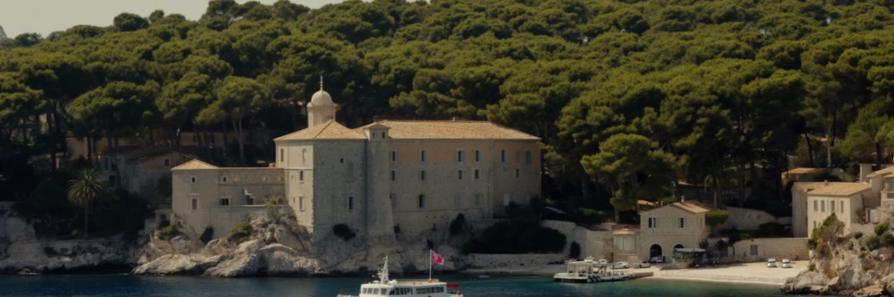
カンヌ沖のレランス諸島は、都市の華やかさと対照的な静けさを持つ。サント・マルグリット島には森、海岸、砦、監獄の記憶があり、サントノラ島には修道院の祈りと農の営みが残る。中心部から短い船旅で届く距離に、観光、信仰、歴史、自然保護が重なる空間があることは、カンヌの都市像を広げる。映画祭や会議の喧騒だけを見ていると、この街が長いキリスト教史、地中海の修道文化、軍事防衛、島の環境管理とも結びついていることを見落としやすい。島は日帰り観光の目的地である一方、船便、水、廃棄物、歩道、火災対策、海洋環境を慎重に扱う必要がある繊細な場所でもある。信仰は観光の背景ではなく、修道士の生活、葡萄畑、沈黙、礼拝、巡礼の時間として続いている。カンヌを文化と宗教から読むには、海辺の社交と島の静けさを同じ都市圏のリズムとして見る必要がある。都市は祝祭だけでなく、離れて考える場所、祈る場所、森を歩く場所を持つことで息をつく。レランス諸島は、カンヌが消費の都市だけではないことを示す鏡である。観光客にとっても、島へ渡る時間は都市の速度を落とし、海と歴史の奥行きを感じる機会になる。静けさを守ることは、都市の魅力を守ることでもある。島の環境は来訪者数、船の頻度、火災リスクに左右されるため、保護とアクセスの均衡も問われる。今も。
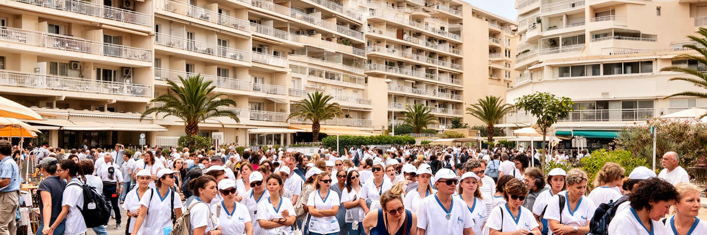
カンヌの住まいは、観光都市の成功と表裏一体で圧力を受ける。海に近い地区や中心部は別荘、短期貸し、ホテル、投資用住宅の需要が強く、地元で働く人、若い世帯、学生、高齢者が手ごろな部屋を探すことは難しくなる。映画祭や国際会議の期間には宿泊価格が跳ね上がり、季節労働者や臨時スタッフの住まい確保も課題になる。ホテル、飲食、清掃、警備、介護、小売、建設で働く人が市外から通えば、交通費と時間が増え、都市のサービスを支える人ほど中心部から遠ざかる。カンヌの豊かさを読むには、高級ホテルの稼働率だけでなく、誰がベッドメイクをし、誰が夜遅く帰り、誰が家賃のために複数の仕事をするのかを見る必要がある。高齢化が進む沿岸都市では、医療、介護、買物支援、バリアフリーも大きな課題である。観光の収益が住民の生活基盤に戻らなければ、都市は美しい表面と疲れた労働の分裂を深める。住宅政策、公共交通、職業訓練、地域商店の維持は、観光戦略と切り離せない。カンヌの魅力を支えるのは海と映画だけでなく、そこで暮らし働く人が都市に残れる条件である。短期滞在者の便利さと長期住民の安心を調整できるかが、観光都市の成熟を測る。格差は劇的な風景ではなく、通勤時間、応募できる部屋の少なさ、若者の転出として静かに現れる。中心部の華やかさを守るにも、裏方が住める都市であることが不可欠である。
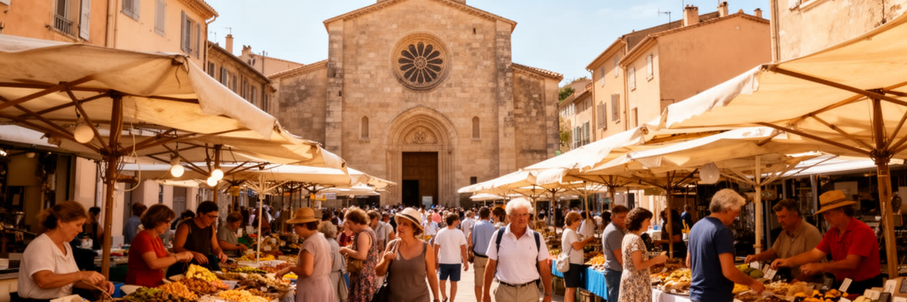
カンヌの文化は映画祭の国際性だけでできているわけではない。旧市街の市場、南仏の食卓、プロヴァンスの言葉と記憶、カトリック教会、移民の商店、北アフリカやイタリアに近い食文化、ヨーロッパ各地から来る滞在者が重なっている。コート・ダジュールは長く避寒地、保養地、芸術家の滞在地、移住先として人を集めてきた。富裕層の別荘文化が都市の一面を作る一方、清掃、介護、建設、飲食、小売で働く移民やその家族も日常文化を支えている。宗教は大きな観光名所だけではなく、教会のミサ、葬儀、地域の慈善活動、移民コミュニティの祈りとして現れる。カンヌを文化都市として読むなら、上映会やパーティーだけでなく、朝市の会話、学校の保護者、地域の祭り、海辺で散歩する高齢者、礼拝後の挨拶を見る必要がある。国際的な都市ほど、華やかな外向きの顔と、地域に根を張る静かな生活文化の差が大きくなる。カンヌの魅力は、その差を隠すことではなく、複数の時間と背景を同じ街路に共存させることにある。多様な住民が中心部の消費空間から押し出されず、文化の担い手として見える時、都市の国際性は本物に近づく。映画祭の期間外に残る市場の声、教会の鐘、家庭料理の匂いが、都市の記憶を毎日更新している。移民の商店や家族経営の食堂は、海辺の高級消費とは別の国際性を街に与える。
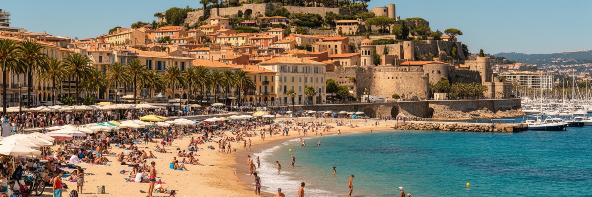
カンヌ観光は、クロワゼット、パレ・デ・フェスティバル、旧港、ル・シュケ、砂浜、フォルヴィル市場、レランス諸島を結ぶ歩く旅として楽しめる。海辺の高級ホテルとブランド店は都市の強いイメージを作るが、坂を上がれば古い港町の路地、教会、眺望、地元の食材を売る市場がある。観光客にとってカンヌは映画祭の街であり、地中海の休暇地であり、ニースやモナコへ向かう沿岸旅行の一部でもある。だが観光は住民の日常空間を使う活動でもある。砂浜の管理、歩道の混雑、深夜の騒音、ごみ、短期貸し、価格上昇は、都市の快適さを左右する。カンヌの遺産は古代遺跡や巨大な記念碑だけではなく、港の地形、漁業の記憶、別荘文化、映画の歴史、市場、島の修道院、海辺の散歩の作法に宿る。観光を深く読むには、写真を撮るだけでなく、どの季節に誰が働き、どの店が地元客を支え、どの公共空間が住民と旅行者の両方に開かれているかを見る必要がある。名所の連続が魅力的であるほど、都市は生活の普通さを失わない工夫を求められる。カンヌの観光価値は、豪華さと港町の記憶が同じ散歩道に残る点にある。訪問者が市場で買物をし、島で静けさを尊重し、住宅地の生活を妨げない時、観光は都市への敬意を帯びる。港の匂いや坂道の疲れまで含めて歩くと、華やかな海岸線の背後にある普通の生活が見えてくる。
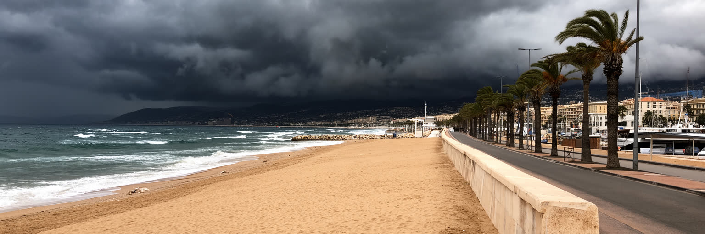
カンヌの地中海性気候は、乾いた夏、穏やかな冬、強い日差し、時に激しい雨をもたらす。観光にとって天候は大きな資産だが、気候変動は海岸都市の弱さをはっきりさせている。夏の熱波は高齢者、屋外労働者、観光客、冷房の弱い住宅に負担をかけ、短時間の豪雨は排水、地下空間、道路、斜面にリスクをもたらす。海面上昇や高潮は砂浜、港湾施設、海沿いの道路、ホテル、地下設備へ影響し、砂浜の維持には継続的な管理が必要になる。地中海の水温上昇、生態系の変化、船の利用、観光の集中も海の環境を圧迫する。カンヌを気候から読むには、青い海と明るい日差しを都市ブランドとして見るだけでなく、誰が暑さの中で働き、どの地域が浸水しやすく、どの公共空間に日陰と水があるかを確認する必要がある。気候適応は観光客の快適さだけではなく、住民の健康、海岸の公共性、工業地帯の安全、島の自然保護を含む都市政策である。美しい湾を守ることは、砂を足す作業だけでは終わらない。交通の脱炭素、建物の断熱、街路樹、警報、避難経路、水辺の使い方を組み合わせて初めて、海辺の都市は次の世代へ続く。涼める場所や水を飲める場所は観光設備ではなく、熱波の時代の基本的な公共インフラである。海を売り物にする都市ほど、海岸を守る費用と責任を住民だけに押しつけない制度が必要になる。
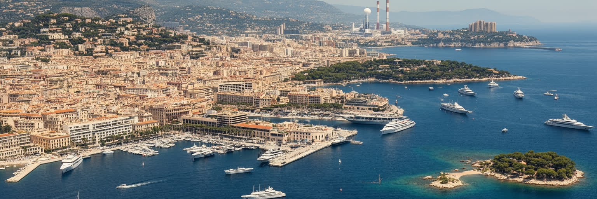
カンヌを読む面白さは、世界的な名前と小さな市域の落差にある。映画祭は都市を文化外交とメディア産業の中心へ押し上げ、会議産業は一年を通じてホテルとサービスを動かす。クロワゼットと旧港は美しい海辺の舞台だが、ラ・ボカの工業、衛星関連の技術、集合住宅、学校、通勤、季節労働が都市の現実を支える。レランス諸島は修道院と森の静けさを残し、旧市街の丘は港町の記憶を伝える。住民にとっては、家賃、短期貸し、交通、夏の混雑、高齢化、若者の雇用、気候リスクが日々の課題である。観光客が歩く場所と住民が暮らす場所は近いが、同じ海辺を見ていても経験は同じではない。カンヌは豪華なリゾートとしてだけ見ると浅くなる。映画、港、島、工場、住宅、信仰、労働、気候を重ねると、地中海沿岸の都市が世界の注目をどう受け入れ、同時に生活の基盤をどう守ろうとしているかが見えてくる。赤い階段は都市の象徴だが、その外側にある朝の市場、駅の混雑、工場の作業、島へ向かう船、日陰を探す高齢者こそ、カンヌを立体的にする。都市の未来は、華やかさを保ちながら、働く人と住む人が中心から消えない仕組みを作れるかにかかっている。世界へ向けた強いブランドを、地域の教育、住宅、交通、環境へ戻せるなら、カンヌは祝祭の都市であるだけでなく、暮らしの都市としても説得力を持つ。